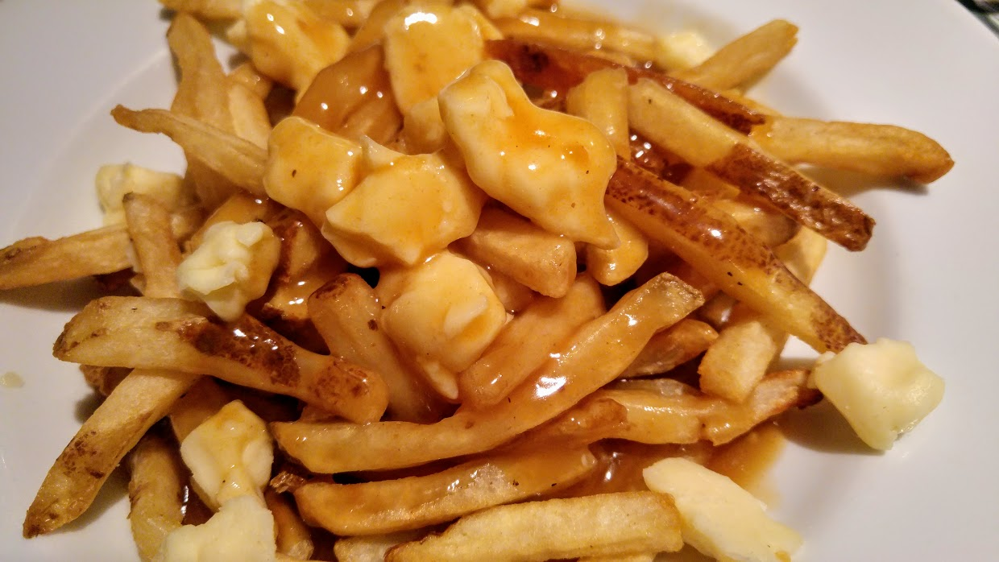

Poutine Recipe

This poutine is made by cooking fries until crispy, slathering a roasted turkey or chicken gravy, and topping with cheese curds.
Ingredients needed:
- Fry the fries until golden brown and crispy.
- Make the gravy, hot and slathery
- Top the whole thing with fresh cheese curds from Quebec